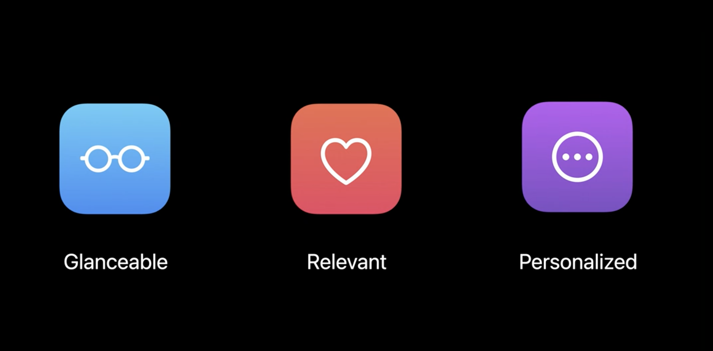
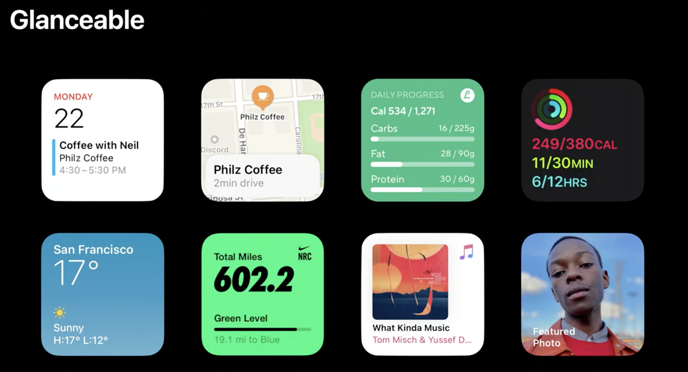
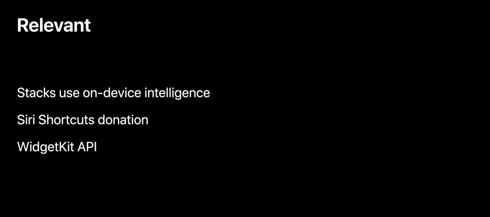
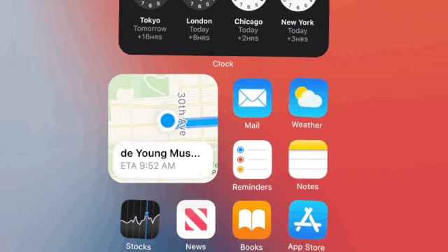
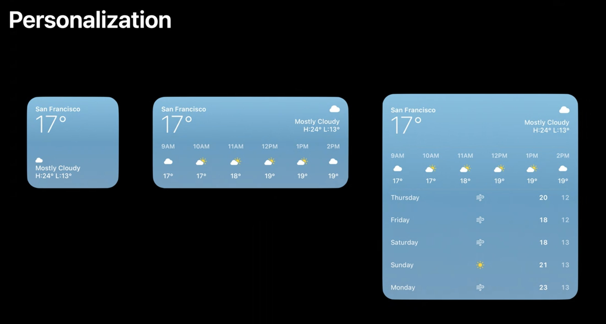
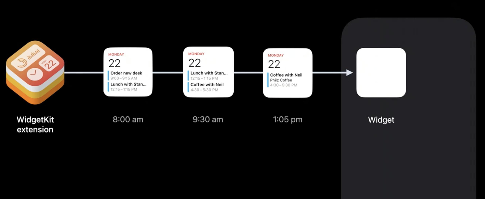
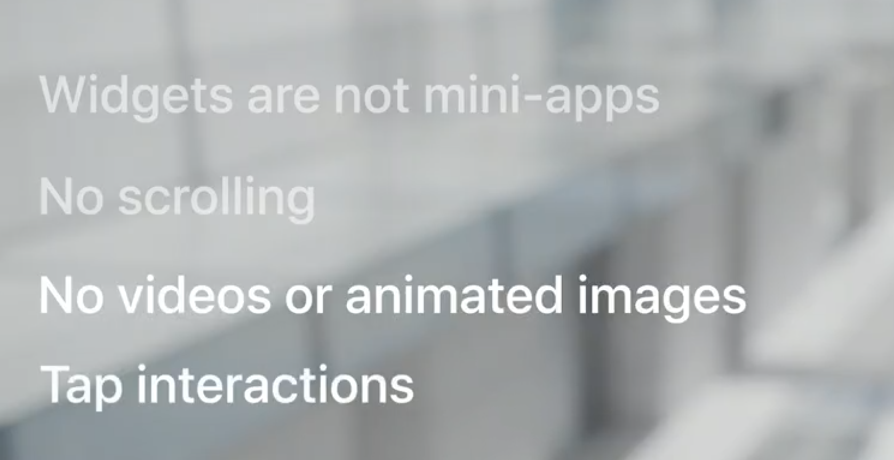

2020 年 6 月 22 日，苹果召开了第一次线上的开发者大会 - WWDC20。这次发布会上宣布了ARM架构Mac芯片（
拳打Intel）、iOS 14 ATT（脚踢Facebook），可谓是一次可以载入史册（我是爸爸）的发布会了，当然还发布了被称为下一个顶级流量入口的Widget。踩着八月的尾巴，本次我们就来探究一下Widget
本文会从
Widget初窥和Widget开发两个维度来探究一下Widget，其中
初窥会带您简单的了解一下Widget，适合应用决策者阅读；
开发会带着您一步一步的完成设计开发Widget，适合程序员阅读。
Widget初窥
一、Widget是什么
In iOS 14, we have a dramatic new Home screen experience, one that is much more dynamic and personalized, with a focus on widgets. The content is the focus. This is very important:
widgets are not mini-apps.Think of this as more projecting content from your app onto the Home screen rather than full mini-apps filled with tiny little buttons.
简单来说Widget不是迷你应用程序。而是一种新的主屏幕体验，能快速提供用户关心的内容是重点
二、Widget的特点
Glanceable一目了然，一览无余Relevant早韭晚菘，量体裁衣Personalized千人千面

要设计一个优秀的Widget，就要先了解Widget的全部特点，了然于胸
针对Apple提出的Glanceable、Relevant、Personalized我分别用一个词语来描述一目了然、早韭晚菘、千人千面
下面简单来说下这几个特点
1、Glanceable | 一目了然，一览无余

一个优秀的Widget要是一目了然，一览无余是什么意思呢？
普通人每天进入“主屏幕”的次数超过90次，但是在主屏幕仅停留几分钟，就切换到其他App了。
所以Widget一定要充分利用狭小的屏幕展示最核心的信息，并且要简洁明了。设计新颖，便于快速浏览，高效是一个优秀Widget的核心。
用户不用思考这个Widget怎么使用，不需要点击任何按钮就可以获得最关心的信息。
2、Relevant | 早韭晚菘，量体裁衣

苹果希望Widget可以和用户紧密结合，与用户的行为所关联，比如早上起床，用户希望看一下天气；中午恰饭，用户希望有人推荐下附近的美食；晚高峰的时候，用户希望了解一下行车路线；晚安的时候，希望记录下次日的行程。
为此，苹果系统提供了一个叫Smart Stacks（智能叠放）的功能，Smart Stacks是一个Widgets的集合。系统会根据每个人的习惯，自动显示用户当前时间点最需要的Widget。

3、Personalized 个性化
Widget要能为用户提供个性化的服务，比如天气Widget，需要能为不同城市的用户提供当地的天气情况。
为此Apple在创建Widget时为开发者提供了两种类型：
-
StaticConfiguration：对于没有用户可配置属性的窗口小部件,也就是用户无需配置，展示的内容只和用户信息有关系。例如，显示一般市场信息的股市窗口小部件，或显示趋势头条的新闻窗口小部件。 -
IntentConfiguration：对于具有用户可配置属性的窗口小部件,也就是支持用户配置及用户意图的推测。您使用SiriKit自定义意图来定义属性。例如，需要一个城市的邮政编码的天气小部件，或者需要一个跟踪号的包裹跟踪小部件。

需要说明的是，IntentConfiguration并不需要编写代码，只需要简单的配置，Xcode 会自动帮你生成对应的代码和类型。
三、Widget的本质
Widget的本质是一系列静态视图堆叠而成的集合，不同的时间点展示不同的视图
这里要引入Widget的核心Timeline
顾名思义，Timeline就是一条时间线，在对应的时间点发生对应的事件
许多Widget具有可预测的时间点，在这些时间点更新其内容是有意义的。例如，显示天气信息的小部件可能会在一整天内每小时更新一次温度。股市窗口小部件可以在公开市场时间频繁更新其内容，但周末则不能完全更新。通过提前计划这些时间，生成不同的视图放入时间线中，WidgetKit会在适当的时间到来时自动刷新您的窗口小部件。
这也决定了Widget基本上不能实时更新
另外值得一提的是，WidgetKit会把 Timelines 所定义的Views 结构信息缓存到磁盘，然后在刷新的时候才通过 JIT 的方式来渲染。这使得系统可以在极低电量开销下为众多 Widgets 处理 Timelines 信息。

四、用户交互
不好意思，没有交互！！！
为了实现以上的特点，Apple也移除限制了Widget的一些功能
- 不能交互
- 不能播放动画
- 不能播放视频
- 不支持滚动
- 不支持主动刷新视图
唯一支持的只有用户点击Widget唤起主App

Widget初窥总结
Widget的出现犹如在一潭死水的iOS桌面上泛起了一片涟漪，一定会有很多App来争夺这块肥肉一般的流量入口。
但是仔细研究一下会发现，Apple这次推出的Widget非常克制，并没有非常激进，
俗话说：喜欢是放肆,但爱就是克制。这里不得不再次引用Apple在Widget介绍中出现频率最高的话widgets are not mini-apps，因为Widget在设计之初就是为了能使用最少的成本，向用户提供最核心的信息。为了尽可能的减少用户成本（电量，网络等）和提高用户体验，Apple在技术层面上做了很多限制，限制了非常多的功能，大大削弱了Widget的地位和重要程度，也降低了开发者实现的热情和积极性
其实每年Apple更新的新技术只有很少的一部分能应用到App上，希望这次的Widget能有动力让大家结合自己的App，给自己的App带来更多的流量，也能给用户带来更好的体验。